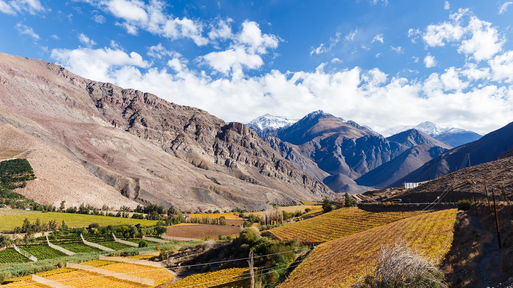
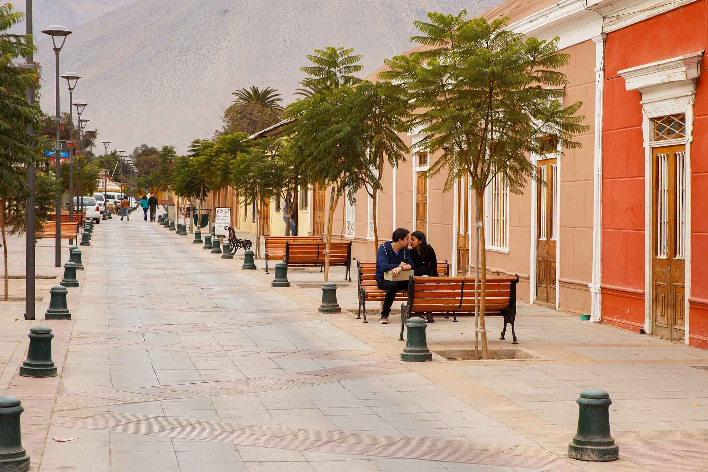
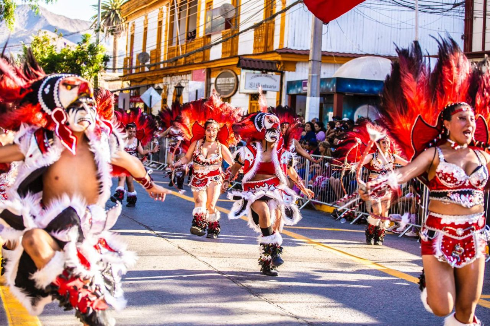

Valle de Elqui
Un entorno de montañas, valles y localidades que caracteriza el paisaje de la comuna.
Paisajes, cultura e historia se encuentran en nuestra comuna. Descubre algunos de sus lugares y conoce aquello que hace de Vicuña un territorio único.
Explorar lugares ↓Un entorno de montañas, valles y localidades que caracteriza el paisaje de la comuna.
La historia, las tradiciones y los espacios que forman parte de la identidad local.
Los cielos despejados y el paisaje natural son parte de los atractivos del territorio.
Explora distintos lugares para acercarte a los paisajes, la historia y las tradiciones de Vicuña.

Recorre un paisaje de montañas, valles y pequeñas localidades. Un entorno que permite apreciar la geografía y la identidad de la zona.

Conoce los espacios urbanos, la arquitectura y los lugares que forman parte de la historia y de la vida cotidiana de la ciudad.

Acércate a las costumbres, los productos y las experiencias que permiten conocer la cultura de las comunidades del territorio.
Las montañas, la amplitud del valle y la luz del entorno forman parte del carácter de Vicuña. El paisaje acompaña la vida de la comuna y es parte de su historia e identidad.
Conocer estos espacios permite comprender mejor la relación entre naturaleza, cultura y comunidad.
Recomendaciones para tu visita →Ten en cuenta algunas recomendaciones para organizar tu recorrido y disfrutar de los distintos sectores de la comuna.
Revisa las distancias, los horarios y la disponibilidad de los lugares que quieras visitar.
Infórmate sobre las condiciones del tiempo y lleva agua, protección solar y ropa adecuada.
Respeta los espacios naturales, sigue las indicaciones locales y no dejes residuos.
Conoce los comercios, las tradiciones y las iniciativas de las comunidades.
Conoce los paisajes, la historia y las tradiciones que forman parte de la identidad de Vicuña.
Volver al inicio →